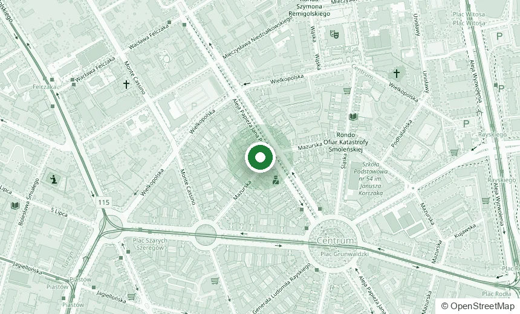
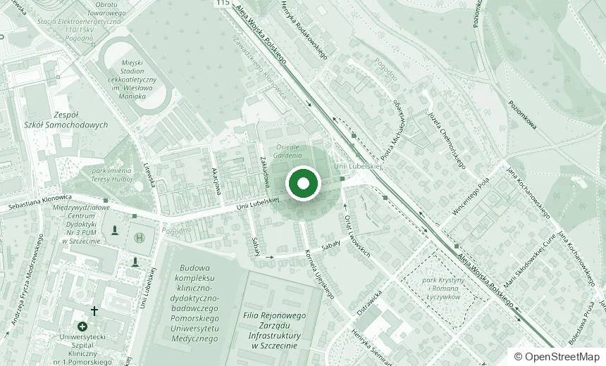

Kontakt
Jedna infolinia, trzy placówki
Wszystkie placówki w Szczecinie i Koszalinie łączy jedna infolinia 665 035 035. Po połączeniu wybierz numer wewnętrzny placówki.
Nasze placówki

Szczecin, centrum
al. Jana Pawła II 3670-453 Szczecin
pon.–pt. 9:00–18:00
665 035 035 wew. 1

Szczecin, Pogodno
ul. Unii Lubelskiej 2B71-252 Szczecin
pon.–pt. 8:00–19:00
665 035 035 wew. 2
Napisz do nas
W sprawach pilnych zadzwoń: 665 035 035. W sprawie wizyty najszybciej zapiszesz się online.